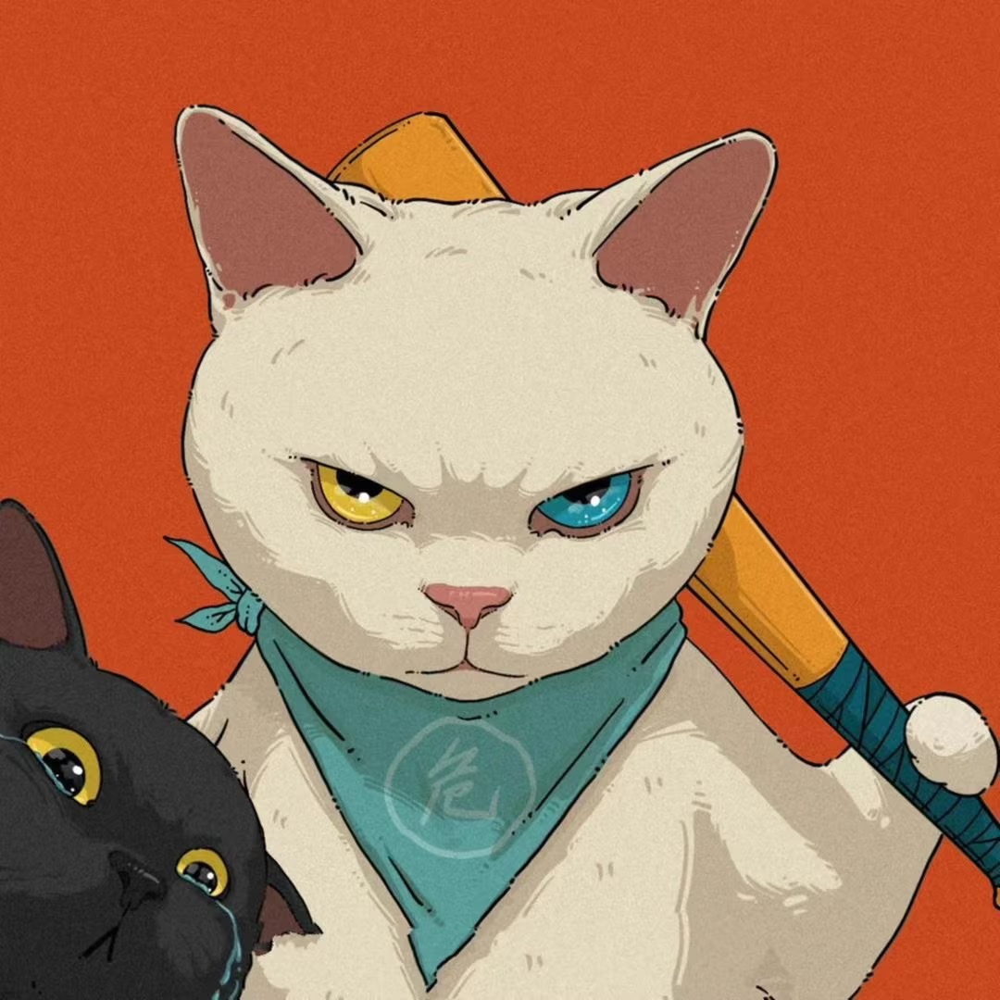

一场因付费订阅于月末零点到期引发的直播毁号事件。超过一年的心血积累，30秒内化为乌有，当着数千名观众的面，被主播亲手摧毁。

《三角洲行动》是一款战术射击游戏，玩家可积累大量高价值虚拟资产——稀有装备、绝版皮肤、战术物资，这些资产需要大量时间投入或真实货币购买，具有切实的现实价值。
在B站游戏直播生态中，「舰长」是付费订阅等级（约每月198元）。清雨Tpor在直播间单方面制定规则：持有舰长资格的粉丝可将账号扫码授权给他代打；但若发现是非舰长扫码，则当场在直播间公开清空账号全部有价值物品，他将此称为「村规」。
这套规则本身已存在极大风险——账号控制权完全交由主播，粉丝需承担一切后果——但由于代打行业长期处于灰色地带，此前一直被默许运行。这一次，它以最冷血的方式撕碎了一个23级老粉长达一年的信任。
五月食伍的舰长订阅因自动续费失败，于2月28日深夜静默过期。他仍是清雨Tpor直播间的活跃核心粉丝，持有23级粉丝牌——不是路人，是他亲手培养出来的老舰长。
背景察觉到清雨Tpor当晚情绪不佳，五月食伍特意为账号配齐6套顶配满改装备，在弹幕打出「我的号，随便玩」并扫码授权。他完全不知道自己的舰长身份已于前一天零点静默失效。
关键事件清雨Tpor登录账号，第一时间识别出舰长过期。他认识这个23级老粉，他清楚这是谁。他没有发一条弹幕提醒，没有退出账号，只说了一句「还有神人」，随即打开仓库。
他开始倒数十秒——但故意数得比正常快，同时利用B站约10秒推流延迟。当五月食伍从屏幕上看到倒计时时，账号已实际被摧毁。绝版金红、超200发AW子弹、十几组红蛋，以及6套顶配装备，30秒内全部以最低价批量清空。
核心事件受害者投稿《关于我三角洲资产30秒缩水一个亿这件事》，评论量一度突破10万条，大量评论者坦言从未玩过《三角洲行动》——愤怒已突破游戏圈。
舆论引爆清雨Tpor拒绝道歉，留下一系列令人发指的回应：「退游吧」「你谁啊」「我跟你很熟吗」「不要把自己看得太重要了」「我知道是你的，我就是要毁啊」。这套嚣张态度让事件热度以指数级扩散。
舆论升级B站宣布对清雨Tpor账号实施永久封禁。《永劫无间》官方解除全部合作；雷蛇声援五月食伍；所有商业合作方、代言品牌全数解约。十年直播积累的商业价值，48小时内彻底归零。
同日，清雨Tpor公开求和，但私下QQ群发言随即曝光——内容显示他仍在甩锅，与公开态度截然矛盾。
平台处理受害者公开声明不接受任何私下和解，全力推进法律程序。盼之App法务团队正式介入，完成账号资产价值评估。
受害方回应被挖出的录像揭示：即使用户成功顶号，清雨Tpor仍反复登录，将1分钟改密时限每次减少10秒，直到对方无法完成——这是经过设计的蓄意行为，绝非冲动。
愤怒网友网购纸船花圈快递送到其门口。
惯犯实锤盼之App陪同五月食伍在上海正式向公安机关报案，警方已出具接报回执，正讨论定性方案。事件登上上海电视台，引发全社会关于网络虚拟财产保护的立法讨论。
法律进程争议蔓延至英雄联盟直播圈，一名LOL知名主播发表声援言论，公开表示支持清雨的毁号行为，引发更大范围的跨圈舆论对撞，被大量玩家谴责。
跨圈扩散事件持续发酵中，清雨本人遭到网友「开盒」（曝光个人真实信息）。清雨公开表示已向公安机关求助，要求对开盒行为进行追责。
当事人动态《南方周末》自媒体账号发表评论文章，认定此事为「典型网络虚拟财产纠纷」，指出五月食伍起诉大概率获法院立案，但由于现行法律存在空白，要成罪「也很难」，通常只能以破坏计算机信息系统等条款追责。
权威媒体报道B站正式撤销清雨Tpor的「知名UP主」黄色闪电认证标识，平台层面对其处理进一步升级。
平台处理盼之App携五月食伍赴上海，警方正式受理立案，开具立案回执单，涉案虚拟资产总金额同步曝光。这是国内以「恶意毁号」正式立案的标志性案例之一。
正式立案清雨公开宣布退出直播行业，直播生涯正式画上句号。但同日又发出强硬声明向五月食伍宣战：「你毁了我的一切，我倒要看看谁能笑到最后。」
当事人动态受害者五月食伍本人开播，详细讲解立案后的案情定性方向、法律程序推进情况及后续维权计划，直播播放量逾249万。
受害方更新在舆论持续压力及立案后，清雨发布道歉声明，自曝刚经历过抑郁症，称没想到事件会演变为网暴。声明引发广泛讨论，多数网友认为其出发点仍是博取同情。
当事人动态事件被中国央媒公开点名批评，舆论再次大范围扩散，标志着此案已从游戏圈纠纷上升至主流媒体持续关注的社会议题。
媒体关注五月食伍公布：上海警方已出具行政案件立案告知书，同时出具移送案件通知书，将案件正式移交浙江方面处理。五月食伍表示将携其他受害人赴浙江重新提交报案材料，争取将案件由「行政」升级为刑事案件。同时强调绝不调解、不出谅解书，并已同步对清雨Tpor提起民事诉讼。
正式立案 管辖转移五月食伍组织多名受害者实际前往浙江，推进重新提交报案材料的行动，争取刑事立案。
受害方更新在央媒点名批评后，清雨毁号事件进一步登上中央电视台正式节目向全国播出，事件影响力从网络舆论场全面扩展至国家级广播媒体，虚拟财产保护立法议题由此进入更高层次的公共讨论。
清雨在昔日舰长群中带着哭腔为自己发声，与官方态度撕破脸，声称不会为了「这点钱」委曲求全，并扬言「凭我这技术，大不了以后当陪玩，一小时我就能挣100」。言论曝光后迅速在全网流传，被广泛解读为心理防线彻底崩溃的信号。
被告方动态盼之App联合五月食伍发布视频《清雨毁号案线下真实！后续来袭～》，记录直接前往受害者五月位置出发、线下对峙清雨全程，播放量突破332.8万，全站排行榜最高位列第1名，1.8万条评论，20.1万点赞。事件热度在维权进入实质阶段后再度引爆全站。
以下均为清雨Tpor在直播或评论区的原话，有完整录像/截图存档
B站直播约有10秒推流延迟，清雨Tpor对此心知肚明。他刻意加快倒计时速度，当受害者从屏幕上看到数字时，账号已实际被摧毁——这是精心设计的陷阱。
五月食伍持有23级粉丝牌，是最高等级忠实支持者之一。舰长于2月28日零点因自动续费失败到期，本人事先并不知情，主观上并无违规意图。（「仅过期几分钟」的早期说法已由五月食伍本人公开辟谣。）
毁号全程在直播中进行，数千名观众实时目击，完整录像已被受害者作为直接书证存档。清雨Tpor每一句话、每一个操作均有记录，无从抵赖。
被挖出的录像证明：即使受害者成功顶号改密，清雨Tpor仍反复登录，将时限每次减少10秒，直到对方无力阻止。这是经过设计的蓄意行为。
清雨Tpor公开求和的同一天，私下QQ群发言遭曝光：内容显示他仍将责任推给受害者，与公开态度截然矛盾，彻底戳穿了所谓道歉的真相。
事件被主流媒体专题报道，律师连线分析：清雨Tpor承担主要责任；其自设「村规」在法律上完全无效，不能作为任何免责依据。
《南方周末》发文认定：五月食伍起诉大概率获法院立案，但由于现行法律对虚拟财产的审理缺乏细化条款，要成罪「也很难」，通常只能援引破坏计算机信息系统等条款追责——这一分析直接推动了立法层面的讨论。
以下均为现行有效法律条文原文，非解读，非推断
五月食伍账号内的绝版装备、AW弹药、游戏币，均通过真实货币充值或大量时间投入积累，属于受民法典明确保护的网络虚拟财产。清雨Tpor声称"有权毁号"的理由，在第127条面前彻底失效——他人财产不因你单方面制定的「村规」而丧失法律保护。
立案追诉标准：造成财物损失5000元以上，或毁坏财物三次以上，均应立案。本案两项均可满足。直播过程中故意加速倒计时、利用延迟阻止止损，属于「手段特别恶劣」的加重情节。
刑事处罚与民事赔偿并行不悖——坐牢不等于免赔，赔钱不等于不坐牢。他所期待的"私下和解了结一切"，在法律意义上根本不成立。
赔偿金额以损失发生时的市场评估价值为准，而非清雨Tpor实际贱卖的价格。那些绝版装备的市场价值，远高于他几分钱一件清仓的瞬间。
他自设的「村规」是单方面意思表示，不构成任何形式的合法授权协议。即便粉丝违反了他的私设规则，他最多有权拒绝服务、退出账号，绝无权处置、销毁他人财产。他的行为完全符合刑法第275条「直接故意」的认定——犯罪目的就是将财物毁坏，动机出于报复，手段主动设计。
民法典127条 · 刑法275条 · 刑法36条律师认定其在舰长过期情况下主动扫码，存在一定疏忽。但有一个根本性区分：扫码授权代打 ≠ 授权销毁仓库全部财产。授权的边界是「帮我打游戏」，从未包含「你可以清空我的账号」。2026年3月13日，五月食伍已正式向上海公安机关报案，警方已出具接报回执。
民法典1184条 · 刑事附带民事诉讼任何人都无权在自己的直播间颁布凌驾于《民法典》之上的「私法」。就算他在屏幕上写了一百次"乱扫号毁号"，那也只是一种威胁性声明，不具备任何法律效力，不能成为侵犯他人财产权的挡箭牌。这就如同一家洗车店在门口挂牌「月卡过期者车辆砸毁不赔」——这块牌子无论写得多显眼，都是无效条款，从第一天起就是。
以下为本站编辑基于事实所作的道德与社会层面判断，字字有据
清雨Tpor的全部收入来源于哪里？来源于五月食伍这样的普通人民群众每个月掏出的198元舰长费，来源于无数个工薪阶层在工资里挤出来的打赏，来源于底层玩家用自己的劳动时间换来的支持。这些人供养了他。然后他转过头来，用这些人的信任，摧毁这些人的财产，嘲笑这些人的愤怒，最后说"你谁啊"。这不是主播与粉丝的纠纷，这是一个靠人民群众吃饭的人，公开反咬人民群众一口。
五月食伍仓库里的每一件装备，都是他用时间、精力、真金白银换来的劳动果实。劳动创造价值，劳动成果神圣不可侵犯，这是最基本的社会共识。清雨Tpor30秒的操作，是对劳动价值最粗暴的否定——他的逻辑是"你的劳动成果在我面前一文不值"。与旧社会地主强占农民田产有何本质区别？不过一个用契约霸占，一个用鼠标清空。
法律面前人人平等，任何人不得以私设规则替代国家法律——这是现代法治的基本原则。清雨Tpor的「村规」在说什么？在说他的直播间里，他的意志高于《民法典》，他的规矩可以覆盖国家法律。这是对法治社会的公然挑衅，是开历史倒车，回到"谁拳头大谁说了算"的丛林时代。一个文明社会消灭私刑花了多少代人的代价，他用一套村规想一笔勾销。
清雨Tpor的每一次直播毁号，都在向成千上万的观众传递一个价值观：强者可以为所欲为，弱者的财产不受保护，规则由强者定义。更可怕的是，有人觉得这很好看，有人以此为乐——说明这种毒素已经渗透进了部分人的价值体系。一个人的恶行，正在腐蚀无数年轻观众的是非判断，污染整个网络文化生态。
五月食伍做了什么？他心疼主播情绪不好，主动付出善意。他是这个社会里还愿意相信他人、还愿意付出善良的那种人。清雨Tpor给了他什么回报？毁号、嘲讽、"退游吧"。这个结果在向全社会广播：善良是愚蠢的，信任是危险的，付出是可笑的。社会诚信体系的崩塌，就是由无数个这样的事件一点一点积累的。
为什么选择毁五月食伍的号，而不是去挑战真正难惹的人？因为他的逻辑是典型的流氓逻辑：专挑软柿子捏。五月食伍越忠诚，越是被欺负的对象——这是流氓的经典策略，也是一切欺压关系的底层逻辑。对没有反抗能力的人挥舞拳头，对真正的强者俯首帖耳，一个只敢欺负自己粉丝的人，是彻头彻尾的懦夫。
以人民的血汗供养自己，却反过来摧毁人民的财产、嘲笑人民的愤怒。背刺衣食父母，人民群众永远不会原谅。
用30秒抹除一个劳动者超过一年的劳动成果，是对劳动价值最粗暴的否定，是对劳动人民尊严最赤裸的践踏。
以「村规」凌驾于《民法典》《刑法》之上，以私刑替代国家法律，是对社会主义法治秩序的公然挑衅。
向全社会输出弱肉强食的丛林逻辑，腐蚀网络公共空间，毒化年轻一代的价值判断，危害文明社会根基。
以最残忍的方式向全社会证明"善良有罪、信任危险"，是对社会诚信体系的蓄意破坏，是道德的癌变。
在数千人面前公开作恶、拒绝认错、表演道歉，挑战公众对正义的基本期待，是对公序良俗的正面冲撞。
「一次月末的续费失败」——这是清雨Tpor发动这场毁灭所需要的全部理由。
就是2月28日零点的一条系统通知，就是一次自动续费没有成功，
就足以让他在数千名观众面前，亲手摧毁一个老粉超过一年的心血。
他卖掉的不是数据包，是数百个熬夜的晚上，
是省下来的奶茶钱，是一个23级粉丝牌背后真实的情感投入。
30秒销毁的，是一整年的生活。
如果你也是清雨Tpor毁号事件的受害者，或掌握相关证据，欢迎联系。 同样欢迎补充事实信息、指出错误或提供更多资料。
邮件 mail@daum.pw → B站 daum12569 → QQ 3998824676 →